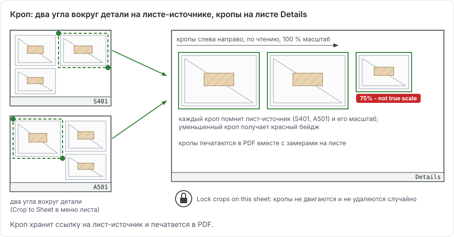
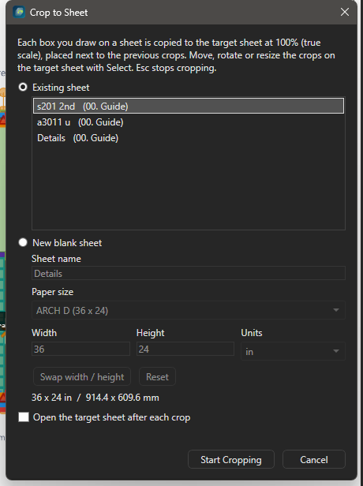
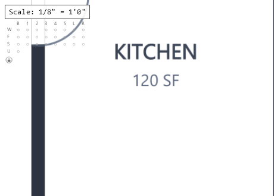
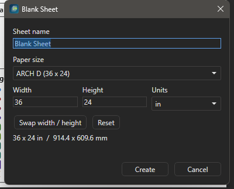
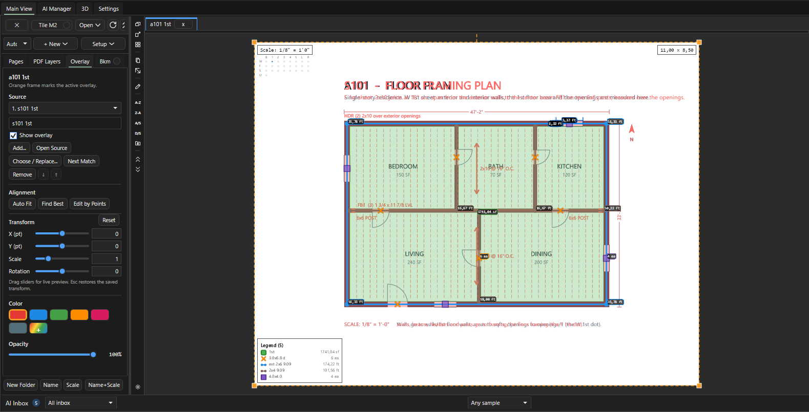
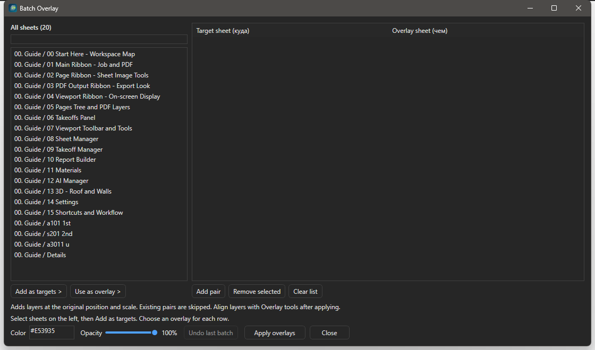
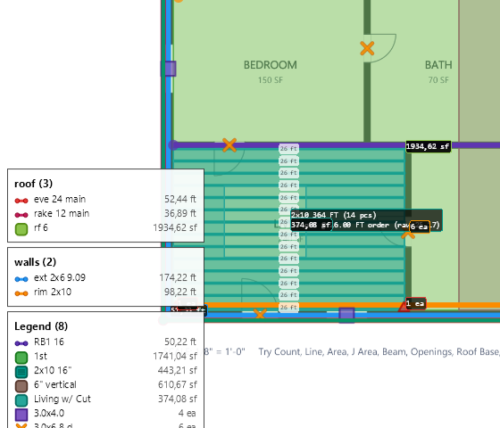
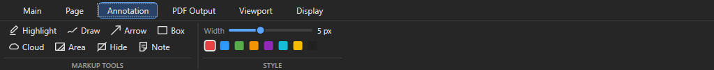
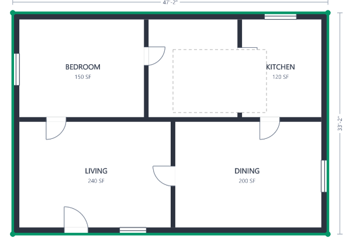

Листы: Crop to Sheet, пустые листы, Overlay, легенда, Hide¶
Здесь - продвинутая работа с листами в OurPlanCore 3.0: собрать узлы с нескольких листов на один, наложить план на план, навести порядок в легенде, поставить пометки разметкой и спрятать лишнее перед выдачей PDF. Нужно при подготовке PDF-выдачи, при сверке Arch и Struct планов и на проектах с десятками деталей.
Crop to Sheet: детали с разных листов на одном¶


Как собрать детали на один лист¶
Page > Crop to Sheet, цель Details, два кропа с разных листов ложатся рядом на один лист.Зачем: все узлы проекта на одном чистом листе в истинном масштабе для PDF клиенту. Нужно: листы с деталями открываются; пустой лист-цель можно создать в самом диалоге.
- Откройте лист с деталями и нажмите Page > IMAGE > Crop to Sheet.
- Выберите в диалоге цель: Existing sheet (в списке пустые листы и листы, где уже есть кропы) или New blank sheet с именем и размером из пресетов Blank Sheet. Галка Open the target sheet after each crop открывает цель после каждого кропа. Нажмите Start Cropping.
- Щёлкните два противоположных угла вокруг детали (Snap и PDF snap работают). Кусок копируется на цель в 100 % масштабе и ставится справа от предыдущего, потом следующим рядом. Строка состояния:
Crop to Sheet > <цель>: click two opposite corners of each detail. Esc stops. - Переключайтесь на другие листы-источники и продолжайте: цель остаётся той же, пока не запустить инструмент заново.
- Нажмите Esc, чтобы сбросить недорисованный бокс, второй Esc выходит в Select.
Результат: на листе-цели кропы в ряд, каждый со ссылкой на лист-источник. Незамасштабированная цель берёт масштаб первого источника; кроп с другим масштабом источника отмечается в строке состояния.
На целевом листе¶

75% - not true scale на уменьшенном кропе и круглая кнопка замка под заголовком Scale.| Действие | Как |
|---|---|
| Выбрать, подвинуть | Select, клик по кропу, перетаскивание |
| Повернуть | оранжевая ручка; Shift - шаг 15°; ПКМ Rotate Crop 90° Clockwise / Rotate Crop 90° Counterclockwise |
| Размер | угловые и боковые ручки, только пропорционально |
| Зеркало | ПКМ Mirror Crop Horizontal / Mirror Crop Vertical |
| Вернуть масштаб | ПКМ Reset Crop to 100% (true scale); кроп не в 100 % показывает красный бейдж 75% - not true scale (только на экране) |
| Прозрачность | ПКМ Opacity...: ползунок 0-100 с живым просмотром, один шаг Undo |
| Порядок | ПКМ Bring to Front, Send to Back, Bring Forward, Send Backward |
| Откуда взято | ПКМ Open Source Sheet (<имя>) |
| Замок | круглая кнопка под заголовком Scale (только на листах с кропами): Lock crops on this sheet / Crops locked - click to unlock. Запертые кропы не выбираются, клики идут к takeoff под ними |
Undo работает на целевом листе (перенос, поворот, размер, Reset, удаление). Размещение кропа с листа-источника не отменяется: лишний кроп удаляют на цели.
Как кроп хранится и печатается
Кроп - запись в annotations.json целевого листа со ссылкой на лист-источник и прямоугольник. Рисуется только этот прямоугольник с видимостью PDF-слоёв источника: на экране в 3x, в PDF в 4x. Экспортируется всегда, когда включён модуль Annotations, даже если Markups не выводятся. При переименовании или переносе источника ссылка перебазируется; удалённый источник даёт красный крест и строку Crop skipped on '<лист>' при экспорте. Поворот или зеркало листа-источника кроп не двигает. Старый EXE (откат на .bak до 2.2.34) читает кроп как линейную разметку и теряет его поля при сохранении.
Как вырезать видимую часть листа в новый лист: Crop New Page¶
Зачем: отдельный самостоятельный лист из куска большого листа (один корпус, один план из нескольких на листе), со своими замерами и своим PDF. Нужно: лист открыт; у листа стоит масштаб, если на новом листе будут замеры.
- Откройте лист и подгоните зум и сдвиг так, чтобы на экране осталась только нужная часть.
- Нажмите Page > IMAGE > Crop New Page.
Результат: в той же папке Pages появляется лист <имя> Crop из видимой области с масштабом исходного листа, он сразу открывается; статус Crop New Page: created <имя> Crop. Замеры исходного листа на новый лист не переносятся.
Разница с Crop to Sheet: Crop to Sheet кладёт на лист-цель кропы со ссылкой на источник, Crop New Page делает новый PDF-лист, на котором мерят как на обычном.
Пустые листы¶

Как создать пустой лист¶
Page > Blank Sheet, имя Details, размер Tabloid (17 x 11), Create.Зачем: чистый лист под кропы деталей или под схему.
- Нажмите Page > ADD > Blank Sheet (или + New > Blank Sheet в Pages, ПКМ по папке New Blank Sheet).
- Впишите Sheet name, выберите пресет бумаги или впишите размер, при необходимости Swap width / height.
- Нажмите Create.
Результат: лист рядом с открытым, с масштабом из первого кропа или заданным через S.
| Поле | Что делает |
|---|---|
| Sheet name | имя листа в Pages |
| Paper size | ширина и высота, переключатель in / mm |
| Пресеты | ARCH D (36 x 24), ARCH E (48 x 36), Letter (11 x 8.5), Tabloid (17 x 11), A4, A3 |
| Swap width / height | книжная вместо альбомной |
| Reset | размер из Settings > Blank Sheets |
| Create | создаёт лист рядом с открытым |
По умолчанию 36 x 24 in. Размер и список пресетов правятся в Settings > Blank Sheets (Apply, Save global default, Save as this job, Clear job override).
Change Sheet Size... - ПКМ по пустому листу в Pages. Лист получает новый пустой PDF, масштаб, легенда и наложения сохраняются; takeoff, разметка и кропы держат координаты от левого верхнего угла; точки, выпавшие за новый размер, перечисляются в предупреждении.
Большие пустые листы (например 11520 x 3600 pt под целый корпус) в 3.0 зумятся без рывков: это исправления 2.2.39-2.2.42.
Overlay: наложить лист на лист¶

Overlay с группами Source, Alignment, Transform, под листом в Pages узел слоя наложения.Под-таб Overlay в панели Pages работает с открытым листом:
| Группа | Кнопки |
|---|---|
| Source | Add..., Open Source, Choose / Replace..., Next Match, Remove; стрелки вверх и вниз меняют порядок слоёв; Show overlay |
| Alignment | Auto Fit, Find Best, Edit by Points, Reset |
| Transform | X (pt), Y (pt), Scale (0.05-20), Rotation; ползунки дают живой просмотр, Esc возвращает сохранённое |
| Color, Opacity | цвет тонировки (Red, Blue, Green, Orange, Magenta, Gray, свой) и прозрачность |
Как наложить один лист на другой и совместить¶
Зачем: проверить, совпадают ли стены и framing A-плана и S-плана того же этажа. Нужно: оба листа в проекте; модуль Sheet Overlay (включён по умолчанию).
- Откройте лист, на который накладываете (например архитектурный план этажа).
- Щёлкните ПКМ по листу-наложению в Pages (структурный план того же этажа) и выберите Sheet Overlay > Use This Sheet as Current Overlay.
- Щёлкните ПКМ по пустому месту листа и выберите Auto Fit Overlay: программа подгоняет наложение по геометрии плана (статус
Overlay auto fit: ...). Если наложения ещё нет, она сама ищет подходящий лист в проекте. - Если совпало неточно, выберите в том же меню Fit by 2 Points и щёлкните точку на наложении (угол стены), потом место на листе, куда она должна встать: наложение сдвигается.
- Щёлкните вторую точку наложения подальше от первой и её место на листе: наложение масштабируется и поворачивается по двум парам. Esc после первой пары оставляет только сдвиг.
- Задайте цвет и прозрачность во вкладке
Overlay(ПКМOverlay Properties...открывает её на нужном листе).
Результат: S-план в цвете поверх A-плана, под листом в Pages появился узел слоя наложения; статус Overlay fit by two points: <масштаб>x, rotation <угол> deg.
Sheet Overlay > Use This Sheet as Current Overlay, ПКМ по листу Auto Fit Overlay, затем вкладка Overlay и галка Show overlay.Советы
- Совмещение по точкам запускают три одинаковые команды:
Fit by 2 Pointsв меню листа, кнопкаEdit by Pointsво вкладкеOverlayиMove Overlay by Points(палитра команд и значок на левой полосе). - Клик цепляется к ближайшей точке PDF в пределах 14 px (в статусе
snapped to ...), поэтому щёлкайте по углам стен и пересечениям осей.
Все пункты меню наложения
| Где | Пункт | Что делает |
|---|---|---|
| ПКМ по листу в Pages, подменю Sheet Overlay | Use This Sheet as Current Overlay |
заменяет активный слой наложения открытого листа этим листом |
Add This Sheet as New Overlay |
добавляет лист ещё одним слоем, прежние слои остаются | |
Overlay Properties... |
открывает вкладку Overlay для листа |
|
Clear Current Sheet Overlay |
убирает активный слой наложения с открытого листа | |
| ПКМ по слою наложения под листом в Pages | Overlay Properties... |
вкладка Overlay с этим слоем |
Hide Overlay / Show Overlay |
спрятать или показать слой, не удаляя | |
Open Overlay Sheet |
открыть лист, который наложен | |
Move Layer Up, Move Layer Down |
порядок слоёв: верхний рисуется поверх | |
Remove Overlay Layer |
удалить этот слой наложения | |
| ПКМ по листу в окне, когда есть наложение | Overlay Properties..., Auto Fit Overlay, Fit by 2 Points |
как в шагах выше |
Клавиши наложения
| Клавиши (наложение должно быть на листе) | Команда | Что делает |
|---|---|---|
Ctrl+Alt и перетаскивание |
Move the overlay |
двигает наложение мышью |
| Ctrl+Alt+Left и другие стрелки | Nudge the overlay |
сдвиг на шаг |
| Ctrl+Alt++ / Ctrl+Alt+- | Scale the overlay |
масштаб |
Ctrl+Alt+[ / ] |
Rotate the overlay |
поворот |
| Ctrl+Alt+0 | Reset overlay transform |
сброс сдвига, масштаба и поворота |
| те же клавиши с Shift | Fine nudge the overlay left и другие, Fine rotate the overlay left / Fine rotate the overlay right (Ctrl+Alt+Shift+[ / ]) |
точный шаг |
Клавиши переназначаются в Settings > Keyboard Shortcuts (горячие клавиши).
Как наложить S-планы на A-планы для всех этажей: Batch Overlay¶
Page > Batch Overlay, S-лист наложением на A-лист с прозрачностью 60, Apply overlays; в Pages появился узел Overlay.
Зачем: сверить стены и framing по этажам, не настраивая наложение на каждом листе. Нужно: архитектурные и структурные планы названы по этажам.
- Нажмите Page > PAGE > Batch Overlay или ПКМ по папке Pages Batch Overlay....
- Выделите слева целевые листы (архитектурные планы) и нажмите Add as targets.
- Выберите для каждой строки справа лист-наложение (структурный план того же этажа) и нажмите Use as overlay. Фильтр по имени или папке сверху.
- Задайте цвет и прозрачность, общие на пакет, и нажмите Apply overlays.
Результат: наложение стоит на каждом целевом листе в исходной позиции и масштабе; существующие пары пропущены. Выравнивание потом обычными инструментами Overlay. Отмена последнего пакета - кнопка в том же окне (Last batch restored.).
Легенда листа¶

Легенда - список takeoff, измеренных на листе; в Pages это узлы под листом. Где её настраивать:
| Что | Где |
|---|---|
| Показ, размер, положение | лента Display, группа Legend: Show, Size, Pos, w/page |
| Порядок | ПКМ по листу (подменю Organize) или по узлу takeoff под листом: Sort Sheet Legend Auto, Sort Sheet Legend A-Z, Sort Sheet Legend by Key (before space), Reset Sheet Legend Order; при нескольких выделенных листах команда идёт на все (Sort N Selected Sheet Legends A-Z) |
| Порядок для папки | ПКМ по папке Pages, Organize: Sort Sheet Legends Auto in Folder, Sort Sheet Legends A-Z in Folder, Sort Sheet Legends by Key (before space) in Folder, Reset Sheet Legend Orders in Folder: для всех листов папки сразу |
| Группы | ПКМ по узлу takeoff под листом: Legend Group > New Group..., имя группы или Main Legend (мультивыбор) |
| Управление группами | ПКМ по листу, Organize > Legend Groups...: переименовать, Move Up, Move Down, Delete (takeoff возвращаются в главную легенду), копирование набора на другие выделенные листы |
| Те же группы на других листах | выделите в Pages лист с группами и листы-цели, ПКМ по листу с группами, Organize > Copy Legend Groups to Selected Sheets (в меню Copy Legend Groups to N Selected Sheets) |
Auto - живой порядок: сначала Line (стены: corners, ext по высоте, коридоры и дальше), потом Area, потом Count; новая позиция сама встаёт на своё место. A-Z, by Key и ручные Move Up in Legend / Move Down in Legend записывают свой порядок листа; Sort Sheet Legend Auto и Reset Sheet Legend Order его снимают и возвращают живой.
Sort Sheet Legend by Key (before space) сортирует по части имени до первого пробела, числа по значению: A1 2x4, A1 2x6, A2 2x4, A10 2x4, B1 2x4, B1A 2x4. Удобно для units и марок.
Группы хранятся в source.json листа (legend_groups), не откатываются Undo, одинаково показываются на экране, в откреплённом окне и в PDF. Без групп легенда рисуется как раньше.
Меню позиции под листом в Pages¶
ПКМ по узлу takeoff под листом; при нескольких выделенных узлах пункт пишет число, например Hide 3 Selected on This Sheet. Спрятать позицию с листа быстрее клавишей H: дерево Takeoffs.
Все пункты меню позиции под листом
| Пункт | Что делает |
|---|---|
Select Linked Takeoff |
открывает лист, выделяет позицию в Takeoffs и её замеры на листе |
Rename Linked Takeoff... |
переименовывает позицию в дереве Takeoffs: имя меняется на всех листах |
Hide on This Sheet / Show on This Sheet |
прячет или показывает позицию только на этом листе; спрятанная не рисуется и не печатается в PDF |
Hide Selected on This Sheet, Show Selected on This Sheet |
то же для всех выделенных узлов под листом |
Move Backward, Move Forward |
порядок рисования на листе: какая позиция лежит поверх соседней; легенду не меняет |
Move Up in Legend, Move Down in Legend |
строка выше или ниже в легенде листа |
Legend Group > ... |
группы легенды, таблица выше |
Sort Sheet Legend Auto, Sort Sheet Legend A-Z, Sort Sheet Legend by Key (before space), Reset Sheet Legend Order |
порядок легенды всего листа |
Размер легенды, шапки и подписей на экране¶
ПКМ по легенде или по шапке масштаба на листе открывает меню вида:
| Пункт | Что делает |
|---|---|
Legend |
показать или спрятать легенду (то же, что Display > Legend Show) |
Legend Position |
угол или край листа, 8 положений |
Legend Size, Scale / Sheet Size Label Size |
пресеты Tiny (0.25), XS (0.5), Small (0.75), Normal (1), Large (1.35), XL (1.75), XXL (2.25); Custom... - свой множитель от 0.25 до 3.0 |
Scale Legend With Sheet |
легенда растёт и уменьшается вместе с зумом листа (как галка w/page на ленте Display) |
Scale Measurement Labels With Sheet |
подписи чисел у замеров растут вместе с зумом; по умолчанию выключено, подписи экранного размера |
Scale Sheet Header With Sheet |
шапка масштаба и размера листа сверху растёт вместе с зумом; по умолчанию выключено |
Это вид на экране; размер легенды в PDF задаётся в PDF Output > OVERLAYS (PDF). Галка Fast pan/zoom на ленте Display (группа OVERLAYS / RENDER) во время панорамы и зума рисует замеры и подписи упрощённо, после остановки кадр полный: на тяжёлых листах движение плавнее. По умолчанию выключена.
Разметка: лента Annotation¶

Width и образцы цвета для следующих пометок.Разметка - пометки на листе без количества: в Takeoffs и Excel не попадает, в PDF печатается, если в диалоге экспорта включены Markups (PDF). Модуль Annotations включён по умолчанию.
| Кнопка | Что рисует | Как |
|---|---|---|
| Highlighter (Shift+H) | полупрозрачный прямоугольник-маркер | два угла |
| Draw Line (D) | линию разметки | клики по точкам; C, Esc или двойной клик заканчивают |
Arrow |
стрелку | клик в хвост, клик в острие |
Box (в палитре Draw Box Tool) |
прямоугольную рамку | два угла |
Cloud |
облако ревизии | два угла |
Area fill |
многоугольник с полупрозрачной заливкой цвета разметки | клики по углам, C или двойной клик; с Box (F9) два угла |
| Hide | белую маску | ниже |
| Note (N) | текстовую заметку | клик по листу, ввести текст |
Цвет и толщину следующих пометок задаёт группа STYLE: ползунок Width (подсказка Annotation line thickness, 1-12 px) и образцы цвета. Уже нарисованные пометки они не меняют.
ПКМ по пометке: копировать, вставить, править, удалить
| Пункт | Что делает |
|---|---|
Copy Markup (в меню с типом: Copy Box Markup, Copy Arrow Markup; при выделении нескольких Copy N Selected Markups) |
копирует пометку; то же Ctrl+C на выделенных |
Paste Markups Here (Paste N Markup(s) Here) |
вставляет скопированное: левый верхний угол копии встаёт в точку щелчка; работает и на другом листе |
Edit Note... |
только у Note: окно Edit Sheet Note с текстом заметки |
Delete Markup (Delete Box Markup, Delete N Selected Markups) |
удаляет пометку; запертые кропы так не удаляются |
Как закрыть часть листа маской: Hide¶
Annotation > Hide, четыре щелчка вокруг подписи и C дают белую маску; Ctrl+Z убирает её.
Зачем: убрать с листа соседний план или мусор перед PDF, не трогая замеры.
- Нажмите Annotation > MARKUP TOOLS > Hide (в строке состояния
Hide Area). - Обведите область кликами и нажмите C (или двойной клик), либо нажмите F9 и щёлкните два угла бокса.
- Чтобы подвинуть или удалить маску, выберите её инструментом Select по пунктиру.
Результат: часть листа закрашена белым; маска лежит над листом и наложениями, но под takeoff и остальной разметкой, поэтому замеры не прячет. В PDF печатается всегда при включённом модуле Annotations, даже без Markups.
Рядом Annotation > Area теперь слушает Box: два угла дают прямоугольную заливку.
Если мешает целый слой PDF
Мебель, размеры или текст векторного PDF проще выключить слоем, чем закрывать маской: вкладка PDF Layers, ПКМ по слою Hide Layer. Highlight Layer в том же меню подсвечивает слой цветом, чтобы понять, что в нём лежит; Clear Highlight или кнопка Clear Hi снимают подсветку (слои PDF).
Прозрачность линий в PDF¶
PDF Output > LINES & AREA > Opac (0-100 %, по умолчанию 100) - прозрачность Line-takeoff и разметок Draw line / Arrow в экспортном PDF и в живом Preview. Линия со всеми стыками гаснет как одна группа. Конвейер экспорта использует ту же настройку. Экранный вид это не меняет: он в ленте Viewport.
Открепленные окна листов¶
Листы можно открыть отдельными окнами и разложить по второму монитору (Open > Detach to windows, Tile M2): Прочее, открепленные окна.
Сценарий: лист Details под PDF-выдачу¶
Page > Blank Sheet, имяDetails, ARCH D.- Открыть лист с узлами,
Crop to Sheet, цельDetails,Start Cropping, два угла вокруг каждого узла; перейти на следующие листы и продолжить; Esc. - На
Detailsрасставить кропы, повернуть,Reset Crop to 100%где сжимали, замок. - На планах
Hideзакрыть соседние планы и мусор,PDF Output > Opac60 % если линии закрывают чертёж. Organize > Legend Groups...на планах с SW: группаShear.PDF Output > Preview, затем экспорт по инструкции PDF.
См. также¶
- Листы Pages - имена, масштаб, сортировка, PDF Layers
- Экспорт PDF
- Settings: Blank Sheets и другие категории
- Горячие клавиши - Sheet Overlay с клавиатуры